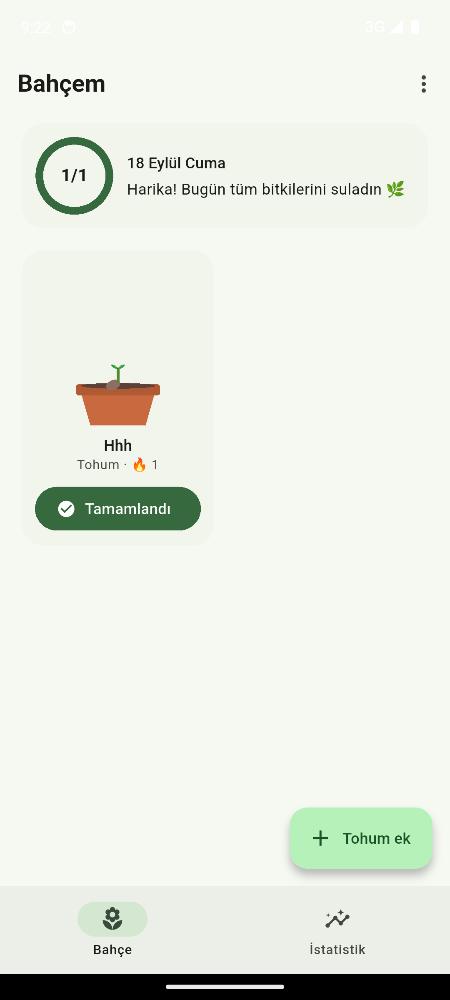
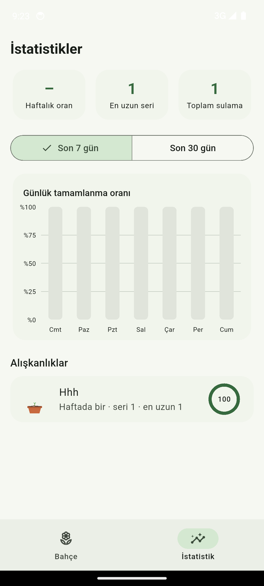

Alışkanlık takibi, saksıda
Her alışkanlığın bir bitkisi var. Tamamladıkça filizlenir, çiçek açar. Unutursan solar, tekrar sularsan canlanır.
Dene: birkaç gün üst üste sula, sonra bir gün atla.
5 evre · 0–100 puan
Bitkinin boyu soyut bir yüzde değil. Her evre belli bir puan aralığına karşılık gelir ve ekranda gerçekten değişir.
Büyüme motoru
Puan her açılışta geçmiş kayıtlardan baştan hesaplanır. Geçmiş bir günü düzeltsen de, uygulamayı bir hafta açmasan da sonuç tutarlı kalır.
Günlük hedefte 4, haftalıkta 15 taban puan. Seri uzadıkça her gün %10 bonus eklenir, en fazla iki katına kadar.
taban × min(1 + (seri − 1) × 0.1, 2.0)
Bugün ya da bu hafta daha yapılmadıysa ceza yok. Günün sonuna kadar vaktin var.
açık dönem → etkisiz
Seri sıfırlanır. İlk kaçırma tolere edilir, sonrakiler giderek artan ceza getirir. Tek günde en fazla 15 puan düşer.
min(5 + 2 × (kaçırma − 2), 15)
Günlük alışkanlıkta 3 gün, haftalıkta 2 hafta üst üste kaçırırsan bitki solar. Bir kez sulaman canlanması için yeter.
3 gün · 2 hafta
Uygulamadan

Günün ilerlemesi en üstte. Her kartta bitkinin evresi, serin ve tek dokunuşla sulama.

Son 7 ya da 30 günün tamamlanma grafiği, en uzun serin ve her alışkanlığın başarı oranı.
Neler var
Gül, ayçiçeği, elma ağacı ve kaktüs. Hepsi kodla çizilir, animasyonla büyür ve solar.
Her gün, haftada bir ya da seçtiğin günlerde. Pazartesi–Çarşamba–Cuma koşusu da olur.
Her alışkanlık kendi saatinde bildirim gönderir. Sunucu yok, bildirimler cihazda planlanır.
Hesap açmazsın, internete ihtiyaç yok. Her şey telefondaki tek bir veritabanı dosyasında.
Dün işaretlemeyi unuttun mu? Takvimden geri dön, bitki anında yeniden hesaplanır.
Tarihler, gün adları, saat seçici. Açılışta kısa bir tanıtım seni karşılar.
Bitki Büyüt açık kaynaklı bir Flutter projesi. Depoyu klonla ve Android, iOS ya da masaüstünde çalıştır.
flutter pub get && flutter run